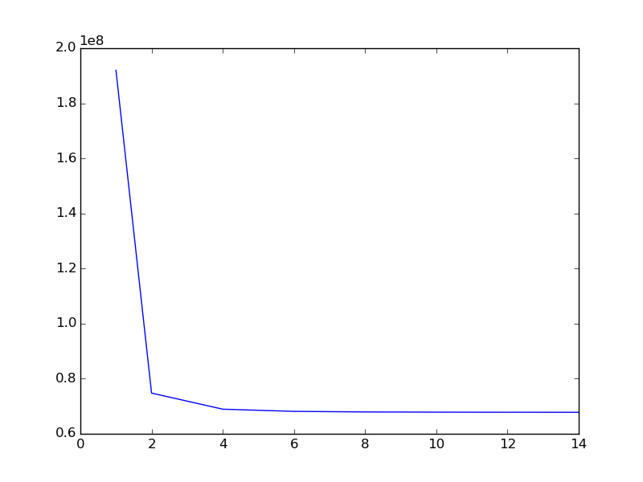
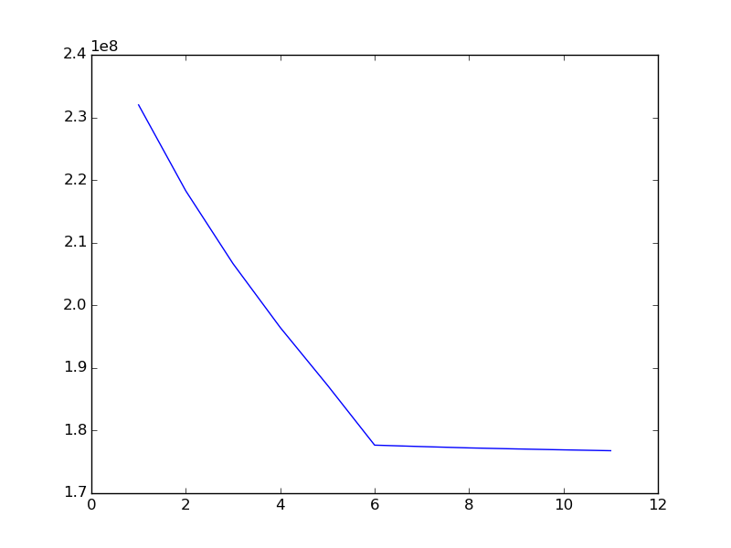
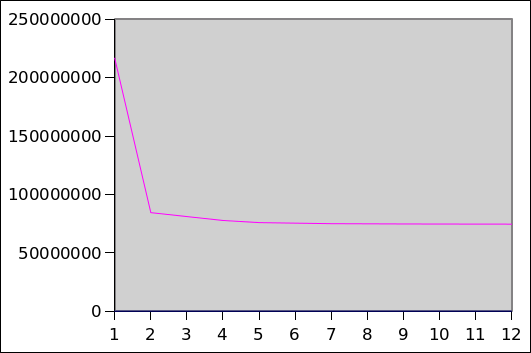

We will learn the structure of space for a mobile robot, based on observations (i.e. images from the robot's camera) and nothing else. We will be using the isomap algorithm to discover the lower dimensional manifold embedded in the hyper dimensional space of the image pixels generated by the image simulator.
« BackMeet Bill, the one who has taken over the internet. If you’ve logged on to Facebook at some point in the past week or so, you’ve probably seen a bunch of your friends sharing images Bill. Bill, you see, has perfect etiquette. He doesn’t brag about having a girlfriend every day, he doesn’t tell everyone it’s snowing when it’s obviously snowing, and doesn’t get into heated debates with trolls. He wants everyone to be like him.
Meet Uma Thurman, the one who killed Bill (In KillBill), a robot free to move in an arena bounded by the walls, with an ability to rotate freely about any point.
Walls
Arena
Uma Thurman is in a square shaped arena with walls having a color gradient or just plain color have been used. The field of view of the robot's camera is 120 degrees. The robot can move anywhere in 'x' and 'y' directions within the arena and rotate about its own axis. The size of the robot itself has been accounted for (by keeping sufficient distance from the walls of the arena).
Now we are able to generate images of what Uma Thurman see's.
The images are of size 600x30 RGB. So a given image can be parameterized in 600x30x3 coordinates. An entire rotation about a single point is done in 500 steps( As we'll see taking large number of images doesn't make any significant changes except for consuming more compuation power of the machine.
We then find the hidden manifold in the data with the help of the Isomap Algorithm, (a processor hungry beast). The implementation of the manifold isomap algorithm is present in the python scikit libraries and is capable of generating coordinates in the reduced space of the hyper space.
NOTE: The lower dimensional coordinates have no physical significance in this case.
The coordinates are just parameters to represent the images in a lower dimensional space.
By looking at the manifold generated by these lower dimensional coordinates, we are able to infer something about the actual motion of the object.
Uma was at (0,0) and then performed a complete rotation about the point.
The first three images are of projections of the 3 dimensional manifold onto 2 dimensional planes. The last one is the manifold itself.
This is the plot for reconstruction error for various number of components in lower dimensional space
This suggests that there are only 2 parameters that govern Uma when it rotates about a single point, (An intuition tells that they are x,y)
Uma Thurman now decided to sit on 3 points and see around, his manifold was similiar but with some weird projections
Uma got a bit high and decided to take smaller images of width 1px LOL! and this is what it got, it went mad and decided to take images only at 30px width
Although he later deduced that those 3 orthogonal circles in the lower dimensional manifold were representing the 3 points of his choice
Till date, Uma is unable to comprehend what it is, that image height did to him, he made a guess that the repetetive pattern in the hyper dimensional coordinates, which he generated by just tailing the rows, which lead to loss of 2 dimensional structuring of image is the culprit
This is the plot for reconstruction error for various number of components in lower dimensional space
The older intuiton that x,ywere the parameters when the robot rotates fully is still valid, as the data set is now generated over 3 points, i,e. 6 independent coordinates.
Now Uma Thurman decided to hop to random points in space, look in some direction and click a picture. This also generated the same type of characteristics as was happeneing in the single point rotation case
All was well and good, he thought let me hop to 100 random locations and look in all direction (take 100 pictures each time) and deduce something, the result was that he could still see that chair structure with a very stron response.
Reconstruction error for random walk
The prescence of only two parameters in a total random walk baffeled Uma, this might be because in random walk neighther x nor y nor theta decide the motions, it is the constrained space of the arena that decided how he would move. So may be these two parameters represent the box in which the robot is able to move. By doing this for a really large number of times, he will discover the coordinate system that determines the arena.
Uma tried to estimate a points orignal coordinates from the coordinates he found in the reduced space. He did this by finding the k nearest neighbours of this point in the Reduced Space and took the mean coordinates of the k neighbours in arena space. These can be generated using the code (refer Coloured Walls/Part3/error.py)
He then estimated by how much he was off from the original point and did this for several iteration and found that on an average he was off by 119.69716 units in coodinate and 124.164036883 in theta (He was sceptic about his computation of mean error in theta, as he didn't loop back values after 360)
Fork the code from Github or Bitbucket
Uma apologizes for writing the code and commiting it very badly, after all she is just a robot.